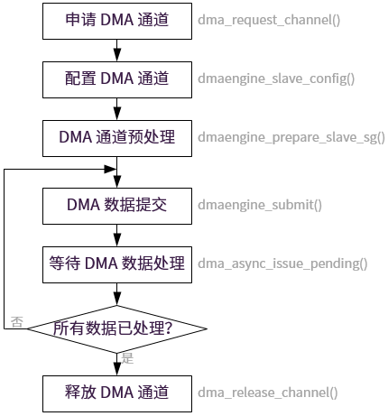

关键流程设计
4 Dec 2024
Read time: 1 minute(s)
本节介绍了 DMA 模块的关键流程。
初始化流程
DMA 驱动的初始化接口通过 INIT_BOARD_EXPORT(drv_dma_init) 完成注册，其中主要步骤有：
-
初始化模块的 clk。
-
初始化 DMA 通道、任务描述符管理信息。
-
注册中断。
DMA Client 的调用流程
作为 DMA 用户，调用流程如下：

在 DMA Client 调用流程中：
-
dmaengine_submit()：将传输请求提交到 DMA Engine 的缓存中，但不开始传输数据。
-
dma_async_issue pending()：将传输请求加入到 DMA Device 的请求队列中，接下来才会启动数据传输。
中断处理流程
DMA 中断处理流程可以确保数据高效传输并合理配置系统资源。当 DMA 传输完成或遇到错误时，中断机制会触发相应的处理程序。中断处理流程如下所示：
-
读取 DMA 完成寄存器，获取已完成的传输数量信息，并逐个查看每个 DMA 通道的完成状态。
在处理完中断后，需要清除相应通道的中断标志位，以免再次触发相同的中断。
-
如果通道有任务传输完成，就调用相应 DMA client 注册的回调函数，进行后续数据处理或其他操作。
每个 DMA 通道在初始化时都会注册一个回调函数，当该通道的传输任务完成时，就会调用这个回调函数。